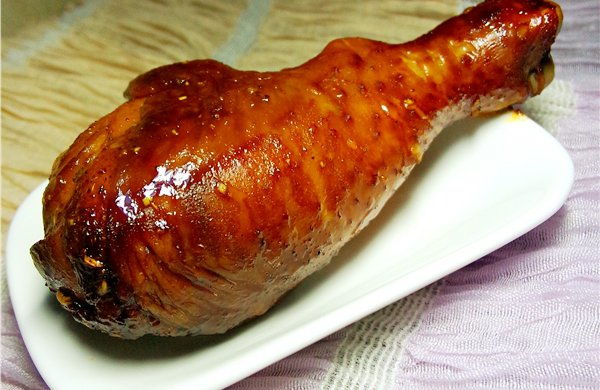

烤雞腿
烤雞腿做法:
1 雞腿在皮上斜劃幾刀或用叉子戳幾下(這個動作,會讓烤好的雞腿外貌一樣皎好,不走樣,也比較容易入味)
2 和醃料拌勻，用手按摩幾下(馬殺雞)^-^
3 裝入大、淺、耐高溫的玻璃容器，放冰箱8小時以上(中間可以拿出來翻面)
4 烤前先把雞腿上的香料渣清乾淨,再用橄欖油均勻抹幾下
5 用錫箔紙包好,放鋪有錫箔紙的烤盤上烤到9分熟(200度烤25分鐘)
6 將包雞腿的錫箔紙拿掉,湯汁不要丟(烤好時可以淋在雞腿上)，烤盤換上新的錫箔紙，將雞肉改放在烤架上(鋪有錫箔紙的烤盤放下面接滴下來的油,這樣烤箱才比較好清)
7 烤到雞油開始滴出來 ，視情況可以再刷橄欖油，盡量保持表皮油光,表皮有點焦就可以了，
8 呈盤時,淋上雞汁,裝飾一些鮮豔的蔬菜,就是餐桌上令人驚艷的好滋味了!

戈登拉姆齊
番茄蛤蠣義大利麵
蘋果塔
心得